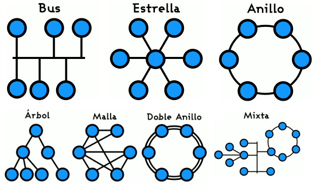
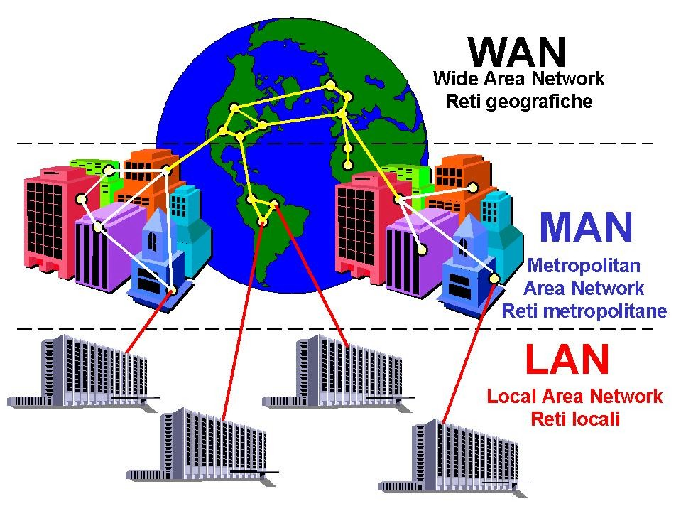
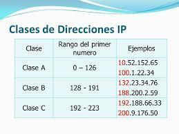
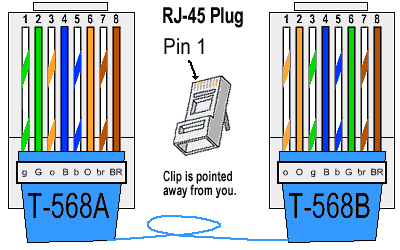

Terminología Básica
Les explicamos los principales conceptos para su conocimiento
Intranet
Una intranet es una red informática que utiliza la tecnología del protocolo de Internet para compartir información, sistemas operativos o servicios de computación dentro de una organización. Suele ser interna, con acceso solo de miembros.

Internet
Internet es una red de computadoras interconectadas a nivel mundial en forma de tela de araña. Consiste de servidores (o "nodos") que proveen información a los usuarios de todo el mundo.

Desarrollo informático
El desarrollo informático se refiere al proceso de creación y mejora de software y sistemas informáticos, utilizando lenguajes de programación y herramientas tecnológicas adecuadas.
Protocolo de red
En informática y telecomunicaciones, hablamos de un protocolo para referirnos a un sistema de normas que regulan la comunicación entre dos o más sistemas que se transmiten información a través de diversos medios físicos.
Topología de red
La topología de red se define como un mapa físico o lógico de una red para intercambiar datos. En otras palabras, es la forma en que está diseñada la red, sea en el plano físico o lógico. El concepto de red puede definirse como «conjunto de nodos interconectados».
Tipos de Topoligías de Red 

Clasificación de las redes
Personal Area Networks (PAN) o red de área personal. Local Area Networks (LAN) o red de área local. Metropolitan Area Networks (MAN) o red de área metropolitana. Wide Area Networks (WAN) o red de área amplia. Global Area Networks (GAN) o red de área global
Ejemplo de la Clasificación de redes 

ARPAnet
Era una red de computadoras construida en 1969 como un medio resistente para enviar datos militares y conectar principales grupos de investigación a través de los Estados Unidos.

Computadora
Computadora, computador u ordenador es una máquina electrónica digital programable que ejecuta una serie de comandos para procesar los datos de entrada, obteniendo convenientemente información que posteriormente se envía a las unidades de salida.
Switchs
Un switch o conmutador es un dispositivo de interconexión utilizado para conectar equipos en red formando lo que se conoce como una red de área local (LAN) y cuyas especificaciones técnicas siguen el estándar conocido como Ethernet.
Router
Un rúter, enrutador o encaminador es un dispositivo que permite interconectar redes con distinto prefijo en su dirección IP. Su función es la de establecer la mejor ruta que destinará a cada paquete de datos para llegar a la red y al dispositivo de destino.

Tipos o clases de Direcciones IP 
Gateway
La pasarela o puerta de enlace es el dispositivo que actúa de interfaz de conexión entre aparatos o dispositivos, y también posibilita compartir recursos entre dos o más ordenadores.
Servidor DHCP
El Protocolo de configuración dinámica de host (DHCP) es un protocolo cliente-servidor que proporciona automáticamente un host de protocolo de Internet (IP) con su dirección IP y otra información de configuración como la máscara de subred y la puerta de enlace
Estandares de Colores 

Broadcast
En una red informática, el broadcast es una conexión multipunto, que permite enviar un paquete de datos desde un punto a todos los usuarios en una red de mensajes. En cuanto al procedimiento, el emisor requiere una dirección de broadcast.
Consola de comandos
Una consola de comandos es un programa que recibe todo aquello que se escribe en la terminal y se encarga de convertirlo en instrucciones que el sistema operativo pueda entender y ejecutar.